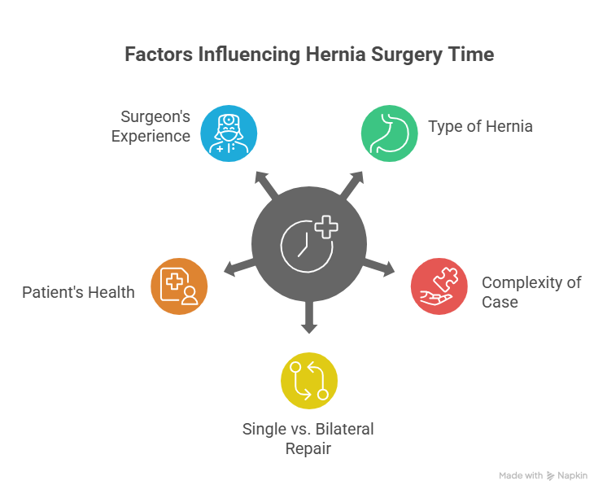
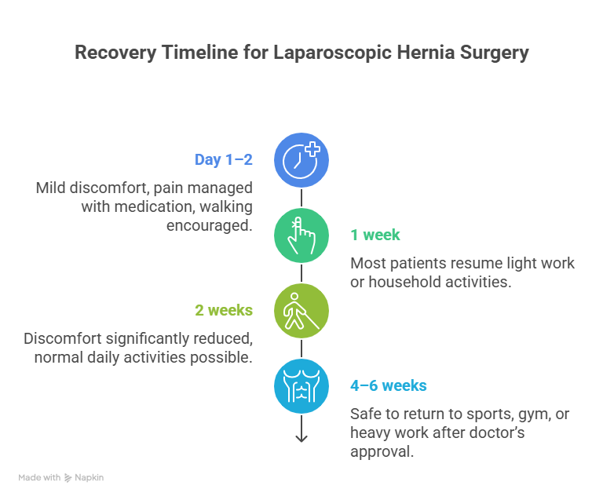

When someone is diagnosed with a hernia, surgery often becomes the most effective treatment to repair the weakened muscle and prevent complications. With the advancement of medical technology, laparoscopic hernia surgery has become a preferred choice for many patients. But one of the most common questions patients ask before undergoing surgery is – “How long does laparoscopic hernia surgery take?”
Generally, the laparoscopic hernia surgery time is shorter than traditional open surgery. On average, it takes around 30 minutes to 1.5 hours, depending on the type of hernia, its size, and whether one or both sides are being treated. However, every patient is different, and factors such as overall health, the complexity of the hernia, and the surgeon’s expertise play a role in determining the exact time.
How long does Laparoscopic Hernia Surgery take?
Laparoscopic Hernia Surgery time is shorter than traditional open surgery. On average, it takes around 30 minutes to 1.5 hours.
Book Your Appointment TodayIf you are planning for Hernia Surgery in Delhi, consulting an experienced surgeon like Dr. Atul Peter’s can help you get clear guidance, accurate estimates, and the best surgical outcomes.
Understanding Laparoscopic Hernia Surgery
Laparoscopic hernia surgery is a minimally invasive procedure that uses tiny incisions and advanced surgical instruments. Instead of making a large cut like in open surgery, surgeons use a laparoscope (a thin tube with a camera) to view the hernia and perform the repair.
This approach has become popular because of its benefits:
- Smaller incisions and less visible scars
- Faster recovery compared to open surgery
- Reduced post-surgery pain
- Shorter hospital stay, often allowing patients to go home the same day
While the laparoscopic inguinal hernia surgery time may vary slightly depending on the complexity, most procedures are completed quickly and efficiently. The surgeon places a mesh to strengthen the weakened muscle wall, which reduces the risk of recurrence.
How Long Does Laparoscopic Hernia Surgery take?
The actual hernia laparoscopic surgery time usually ranges between 30 minutes and 90 minutes. In straightforward cases, such as a small inguinal hernia, the procedure may be completed in less than half an hour. However, in more complex cases, like recurrent hernias or bilateral (both sides) hernias, it may take closer to 1.5 hours.
Here’s a quick breakdown:
- Unilateral Inguinal Hernia (one side): 30–45 minutes
- Bilateral Inguinal Hernia (both sides): 45–75 minutes
- Recurrent or Complex Hernia: 60–90 minutes
One of the biggest advantages of this surgery is that, despite the variation in duration, patients generally spend less time in the hospital. Most people are discharged the same day or within 24 hours.
Factors Affecting Hernia Laparoscopic Surgery Time

1. Type of Hernia
The type of hernia plays a key role in determining the surgery duration. Inguinal hernias are usually simpler and take less time to repair, while larger incisional or umbilical hernias may require more careful handling, which adds to the overall time.
2. Complexity of the Case
A straightforward first-time hernia repair is often faster than treating a recurrent hernia. If the hernia has reappeared after a previous surgery, scar tissue and weakened muscles can make the procedure more complex and time-consuming.
3. Single vs. Bilateral Repair
When a patient has a hernia on just one side, the operation is usually completed quickly. However, in bilateral hernia cases, surgeons must repair both sides, which increases the laparoscopic hernia surgery time compared to a single repair.
4. Patient’s Health Condition
The overall health of the patient influences how long surgery takes. Conditions such as obesity, diabetes, or heart problems require extra care and monitoring during the procedure, which may slightly extend the surgery time.
5. Experience of the Surgeon
An experienced surgeon like Dr. Atul Peter’s can perform the surgery more efficiently, reducing time without compromising safety. Less experienced surgeons may take longer as they proceed more cautiously, especially in complicated cases.
Step-by-Step Procedure of Laparoscopic Hernia Surgery
1. Preparation and Anesthesia
Before the surgery begins, the patient is given general anesthesia to ensure they are completely asleep and pain-free. The surgical area is cleaned and sterilized, and the patient is carefully positioned for the procedure.
2. Creating Small Incisions
The surgeon makes 3–4 small incisions in the abdomen, each about half an inch long. These incisions serve as entry points for the laparoscope (camera) and other surgical instruments.
3. Insertion of Laparoscope and Instruments
A thin tube with a camera, called a laparoscope, is inserted through one of the incisions. This camera projects a magnified view of the hernia on a monitor, allowing the surgeon to see the affected area clearly.
4. Identifying and Accessing the Hernia
The surgeon carefully identifies the hernia sac and the weakened abdominal wall. Carbon dioxide gas is used to inflate the abdominal cavity slightly, giving more space to operate and better visibility inside.
5. Placing the Mesh
A special surgical mesh is inserted through the incisions and positioned over the weakened muscle area. This mesh acts as a reinforcement, preventing the hernia from recurring in the future.
6. Closing the Incisions
Once the mesh is secured, the instruments are removed, and the small incisions are closed using stitches or surgical glue. These tiny cuts heal quickly and leave minimal scarring compared to open surgery.
Hernia Surgery Recovery Time (Laparoscopic)

One of the biggest reasons patients prefer laparoscopic hernia repair is the faster recovery time. Unlike open surgery, which requires larger cuts, laparoscopic surgery involves only small incisions. This means the body heals quickly and with less pain.
On average, the laparoscopic Hernia Surgery in Delhi recovery time is around 1–2 weeks for light activities and 3–4 weeks for full recovery. Many patients can walk around within a few hours after surgery and return to desk jobs within a week. However, heavy lifting or strenuous exercise is usually restricted for 4–6 weeks to allow the mesh and muscles to heal properly.
Typical recovery timeline:
- Day 1–2: Mild discomfort, pain managed with medication, walking encouraged.
- 1 week: Most patients resume light work or household activities.
- 2 weeks: Discomfort significantly reduced, normal daily activities possible.
- 4–6 weeks: Safe to return to sports, gym, or heavy work after doctor’s approval.
Benefits of Laparoscopic Hernia Surgery
One of the biggest reasons patients prefer laparoscopic hernia surgery is the wide range of benefits it offers. Since the procedure is minimally invasive, patients experience less post-operative pain compared to open surgery. The smaller cuts also mean minimal scarring, making the procedure cosmetically appealing.
Another major benefit is the faster return to daily life, as many patients can get back to work within a short period. The reduced risk of infection, quicker healing, and lower chances of hernia recurrence make laparoscopic surgery a safe and effective choice for long-term health.
Life After Laparoscopic Hernia Surgery
Life after laparoscopic hernia surgery is generally smooth, with most patients noticing quick improvement in their comfort and mobility. In the first few days, mild pain or discomfort around the incision sites is common, but it usually fades quickly with medication. Most people can return to light activities within a few days and resume regular routines in about two weeks.
However, patients should avoid lifting heavy weights, straining, or engaging in intense exercise until their surgeon confirms it is safe—usually after 4–6 weeks. With proper care and follow-up checkups, patients can expect a strong recovery and long-lasting results, making the procedure a life-changing step toward better health.
How long does Laparoscopic Hernia Surgery take?
Laparoscopic Hernia Surgery time is shorter than traditional open surgery. On average, it takes around 30 minutes to 1.5 hours.
Book Your Appointment TodayFinal Thoughts
Laparoscopic hernia surgery has become the gold standard for hernia treatment because of its efficiency, shorter recovery time, and minimally invasive nature. For most patients, the procedure takes between 30 minutes to 90 minutes, and recovery is much faster compared to traditional open surgery. While the exact hernia laparoscopic surgery time depends on factors like the type of hernia, the complexity of the case, and overall patient health, the results are generally long-lasting and highly successful.
Choosing an expert surgeon is equally important to ensure safety and the best possible outcomes. For those considering Hernia Surgery in Delhi, Dr. Atul Peter’s provides world-class expertise, advanced surgical techniques, and comprehensive aftercare. With his guidance, patients can expect a smooth surgery, minimal downtime, and a quicker return to normal life.
Frequently Asked Questions
How long does laparoscopic hernia surgery take?
What is the Recovery time after laparoscopic hernia surgery?
Is Laparoscopic Hernia Surgery Painful?
How safe is Laparoscopic Hernia surgery?
Can a Hernia come back after Laparoscopic Surgery?
When can I resume exercise after Hernia surgery?
Recommended Further Reading
Have Personal Health Questions?
Consult with Dr. Atul Peters and our expert multidisciplinary team at Max Smart Super Speciality Hospital, Saket, New Delhi.
Book Your Consultation